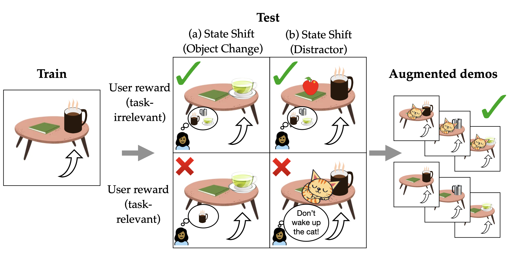
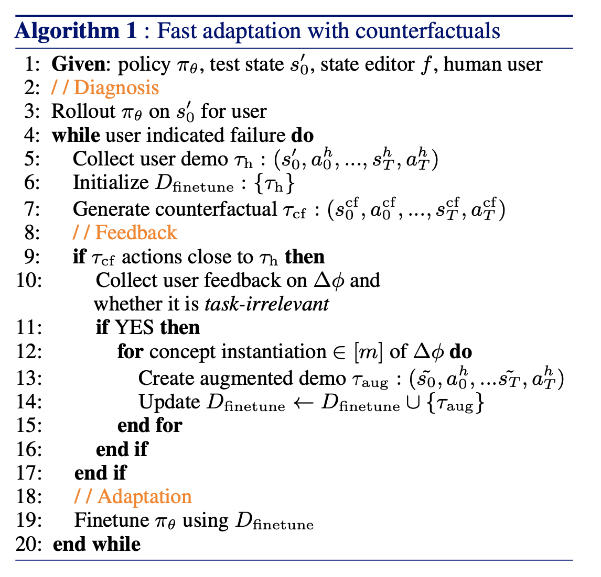

Abstract
Policies often fail due to distribution shift---changes in the state and reward that occur when a policy is deployed in new environments. Data augmentation can increase robustness by making the model invariant to task-irrelevant changes in the agent's observation. However, designers don't know which concepts are irrelevant a priori, especially when different end users have different preferences about how the task is performed. We propose an interactive framework to leverage feedback directly from the user to identify personalized task-irrelevant concepts. Our key idea is to generate counterfactual demonstrations that allow users to quickly identify possible task-relevant and irrelevant concepts. The knowledge of task-irrelevant concepts is then used to perform data augmentation and thus obtain a policy adapted to personalized user objectives. We present experiments validating our framework on discrete and continuous control tasks with real human users. Our method (1) enables users to better understand agent failure, (2) reduces the number of demonstrations required for fine-tuning, and (3) aligns the agent to individual user task preferences.
Video
Framework Overview
Diagnosing Distribution Shift Failures
Policies can fail due to different distribution shifts. The figure below shows illustrative distribution shifts for task: ``Get my mug." Shifted concepts can be state-based (a changed object) and also reward-based (dependent on user preference). We can deploy data augmentation for task-irrelevant shifts (green checks), a subset where the modified state does not impact desired policy behaviour. But how do we know what's task-irrelevant vs. -relevant for each user?
Generating Counterfactual Demonstrations for Human Feedback
Our key insight is that end users are uniquely positioned to recognize which concepts are relevant or irrelevant for their desired task. But how do we elicit good concept-level human feedback? We propose a counterfactual approach to identify failure. Consider that the human also observes a trajectory of the robot successfully retrieving the object in the same scenario but with a single change -- the pan being blue instead of striped. Being able to contrast the two trajectories of successful and unsuccessful behaviour can better position the user to identify visual concepts impacting failure. Here, the user may identify pan material to be a task-irrelevant concept, which can then be used to make the policy invariant to this concept via data augmentation.
Adaptation to Personalized User Objectives
We test our framework in three domains consisting of both discrete and continuous control tasks with real human users. Through human experiments, we verify our main hypothesis that user feedback resulting from counterfactual demonstrations significantly improves the accuracy of user-identified TI concepts as well as the data efficiency of policy finetuning with less user effort.
Moreover, policies finetuned using this human feedback (CF-H) result in higher performance with less expert demonstrations required compared to baselines. These findings illustrate a promising direction into leveraging end users to more efficiently perform interactive alignment of robotic policies at test-time.
Paper

Diagnosis, Feedback, Adaptation: A Human-in-the-Loop Framework for Test-Time Policy Adaptation
Andi Peng, Aviv Netanyahu, Mark Ho, Tianmin Shu, Andreea Bobu, Julie Shah, and Pulkit Agrawal
@inproceedings{peng2023diagnosis,
title = {Diagnosis, Feedback, Adaptation: A Human-in-the-Loop Framework for Test-Time Policy Adaptation},
author = {Peng, Andi and Netanyahu, Aviv and Ho, Mark and Shu, Tianmin and Bobu, Andreea and Shah, Julie and Agrawal, Pulkit},
year = {2023},
booktitle = {Proceedings of the 40th International Conference on Machine Learning (ICML) 2023}
}Team

Andi Peng
MIT

Aviv Netanyahu
MIT

Mark Ho
NYU

Tianmin Shu
MIT

Andreea Bobu
UC Berkeley

Julie Shah
MIT

Pulkit Agrawal
MIT
Acknowledgements
This template was originally made by Phillip Isola and Richard Zhang for a colorful ECCV project, and adapted to be mobile responsive by Jason Zhang. The code we built on can be found here.